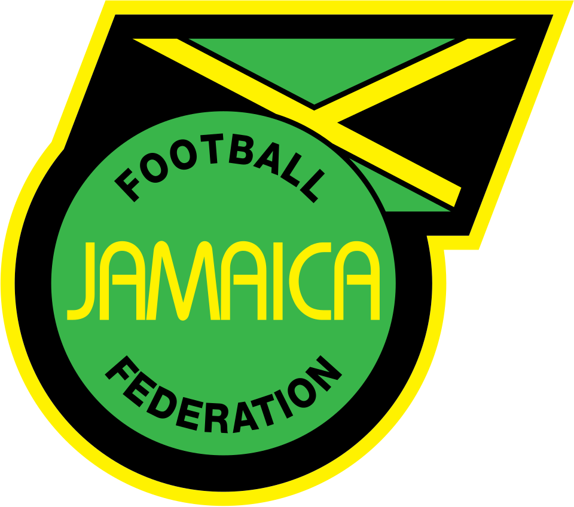
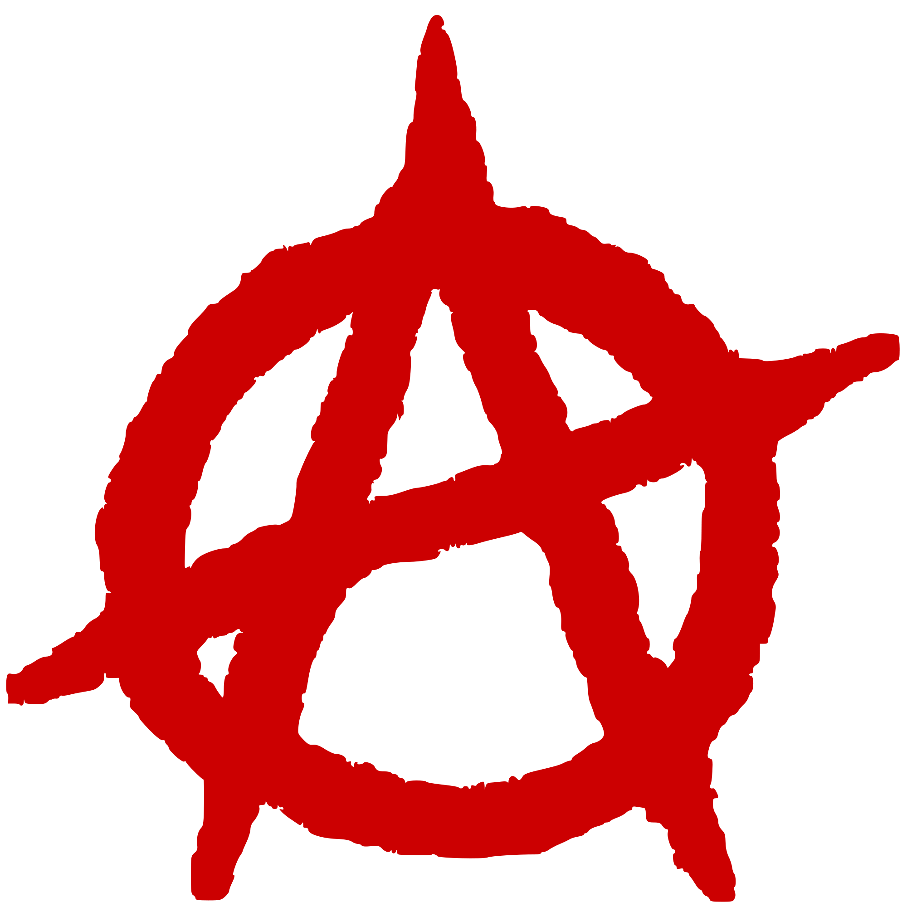

By: Novakowiski
Welc to my blog!!! I'm gonna post about... everything! Peripheral countries, wars and conflicts, leaders, history, islands, natural disasters, the political spectrums and, above all, resistance.
I'll share geopolitics things with u guys lolol
By: Novakowiski
Welc to my blog!!! I'm gonna post about... everything! Peripheral countries, wars and conflicts, leaders, history, islands, natural disasters, the political spectrums and, above all, resistance.

By: Novakowiski
Yeah, 2026, World Cup fever, North America... so, there's nothin' better than talkin' about soccer. What about Brazilian soccer? Hell yeah! Brazil and Jamaica are such a random duo and we know it. But do you know why? Their affinity began long before Jamaica's modern tournament successes. In 1964, a Kingston football club explicitly named itself Santos after Pelé's legendary Brazilian side, adopting their iconic colors. The bond became physical and electric on January 31, 1971, when Pelé and Santos arrived in Kingston to play at the National Stadium, drawing a crowd of 30,000 people and receiving the key to the city. This admiration was further bridged by Jamaican football icon Allan "Skill" Cole, who later played professionally in Brazil for Náutico in 1972.

By: Novakowiski
Anti-fascism is non-negotiable, but let’s be real: swapping a fascist boot for a Marxist state boot isn't liberation. Marxism wants to hijack state power to crush the right. But anarchists know the state is the problem—you can't use a tool of domination to build freedom. Vanguard parties and "temporary" dictatorships just create new bosses. We don't need a new rulers, we need horizontal solidarity and real self-organization. Smash fascism, ditch the state. If ur an anarchist and supports Marx's socialism, ur not an anarchist. SImple! Js like Bakunin once said: "If you take the most ardent revolutionary, vest him in absolute power, within a year he would be worse than the Tsar himself."
By: Novakowiski
Geoeconomic confrontation is the #1 short-term threat to global stability, according
to the Global Risks Report. Over 50% of risk experts expect a volatile outlook through
the mid-2020s.
The Core Issue: Massive shifts in critical mineral supply chains (lithium, rare earths)
and tariff escalation between major economic blocs (US, EU, China).
The Reality: States are shifting from market-driven globalization to aggressive industrial
policy, prioritizing state security over open trade.